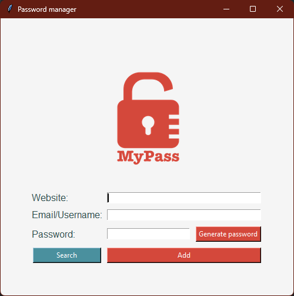

Desktop app · Security
MyPass — local password manager
A desktop vault that generates strong passwords and keeps them on your own machine.
0credentials sent to a server
The problem
Reusing the same password everywhere is the default because the alternative asks for a cloud account and trust in someone else.
What I built
A Tkinter desktop app: a master password that is never stored — only its SHA-256 hash — a strong-password generator, several accounts per site, click-to-copy from the list, and local storage only. Nothing leaves the machine.
Result
A vault I actually use, and the project where I had to think about where a secret lives and who can read it.
Screens

Stack
- Python
- Tkinter
- SHA-256
- JSON